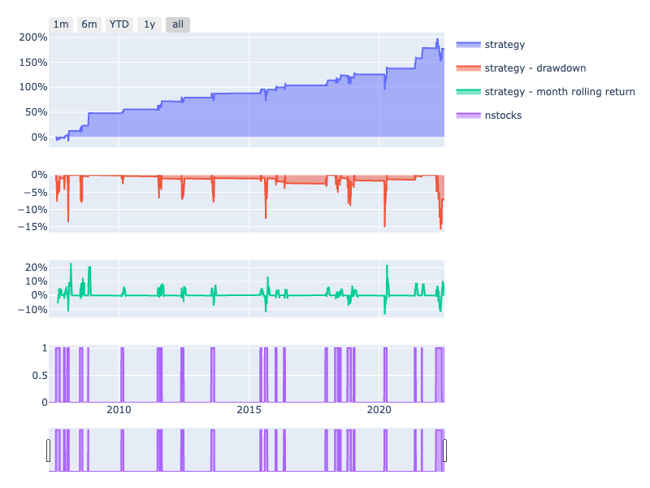

回測
一行執行強大的回測系統，產生 position 的每日訊號，帶入 finlab.backtest.sim 進行回測，快速得到風險報酬分析、選股清單！
回測速速上手
你相信年報酬 +23% 的策略，程式碼三行就搞定嗎？讓 FinLab 打開你的眼界，接下來我們可以建構一個策略，策略每個月會檢查股票清單，持有價格小於 6 元的股票，剔除價格大於 6 元的股票，每個月底執行，周而復始。來回測看看這樣的績效到底如何：
from finlab import data
from finlab import backtest
# 只買入價格小於 6 元的股票
close = data.get('price:收盤價')
position = close < 6
# 回測，每月底(M)重新調整股票權重
report = backtest.sim(position, resample='M', name="價格小於6的股票")

上傳回測資料到雲端平台後，使用者可以點選下方的「選股清單」來查看今天的持股狀況，甚至是手動跟單，來將虛擬的獲利變成現實。

顯示策略回測結果

取得策略交易紀錄
trade_record 表格重點欄位說明
* exit_sig_date:出場訊號產生日。 * entry_sig_date:進場訊號產生日。 * entry_date:進場日。 * exit_date:出場日。 * period:持有天數。 * position: 持有佔比。 * return:報酬率。 * mdd:持有期間最大回撤。 * mae:持有期間最大不利幅度。 * g_mfe:持有期間最大有利幅度。 * b_mfe:mae發生前的最大有利幅度。顯示波動分析圖

策略流動性風險檢測
from finlab.analysis.liquidityAnalysis import LiquidityAnalysis
# 交易紀錄進出場成交張數大於1000張的比例, 成交金額大於1000000元的比例，檢測資金部位胃納量
report.run_analysis(LiquidityAnalysis(required_volume=100000, required_turnover=1000000))

更多回測範例
創新高策略
股票最忌諱就是「買高賣低」，汲汲營營，但是你有沒有想過，大家都怕買高，反而要買更高？
創新高的股票，由於受到市場的關注，上漲動能非常強，所以選擇這些股票，就能帶來不錯的報酬率。
下方的條件，使用了 pd.DataFrame 裡的功能 rolling(250).max()，代表 250 天的最高價，
假如今天的收盤，等於 250 天的最高價，就代表創新高了！
from finlab import data
from finlab.backtest import sim
# 創 250 天新高的股票
close = data.get('price:收盤價')
position = (close == close.rolling(250).max())
# 回測，每月(M)調整一次，選出當天創新高股票
sim(position, resample='M', name="創年新高策略")

高 RSI 技術指標策略
上述策略會選出很多檔標的，要是我們只想要選出 20 檔要怎麼寫呢？這個策略我們可以將 RSI 最大的 20 檔股票納入組合，並且持有一週，來試試看效果如何。我們可以用 data.indicator 來計算所有股票的 RSI，也可以用 rsi.is_largest 來計算此股票的 RSI 是否是最大的 20 檔。
from finlab import data
from finlab.backtest import sim
# 選出 RSI 最大的 20 檔股票
rsi = data.indicator('RSI')
position = rsi.is_largest(20)
# 回測，每月(M)調整一次
report = sim(position, resample='W', name="高RSI策略")

乖離率和財報濾網策略
可以一次使用兩種不同的指標來選股嗎？答案是肯定的，而且這兩個指標，還可以是每季的財報跟每天的價格，混和條件選股，由於下方的 roe 和 close 並不是 pd.DataFrame 而是 finlab.dataframe.FinlabDataFrame ，當在做條件運算，例如交集、聯集（and or）時，不同頻率的 index 會被取連集並且整合，所以使用者不需要思考，究竟資料是「季」還是「月」還是「日」，可以直接當作 index 和 columns 是對齊的，直接運算（程式會自動想辦法）。
下面的策略，利用 close / close.shift(60) 計算乖離率，並取 30 檔股票出來，再用 ROE 當濾網，選擇 ROE 為正的股票。
from finlab import data
from finlab.backtest import sim
# 下載 ROE 跟收盤價
roe = data.get("fundamental_features:ROE稅後")
close = data.get('price:收盤價')
position = (
(close / close.shift(60)).is_largest(30) # 選出乖離率前 30 名的股票
& (roe > 0) # 選出 ROE 大於 0 的股票
)
# 回測，每月(M)調整一次
report = sim(position, resample='M', name="乖離率和ROE濾網策略")